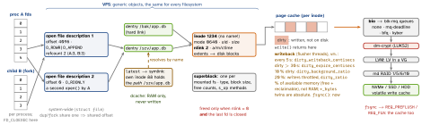

linux · folio
In one line: A file descriptor indexes the process’s fd table → an open file
description (offset, status flags) → an inode (metadata + block map, no name);
dentries map names to inodes. write() only dirties the page cache; data is
durable after fsync(), and a file is replaced atomically by write tmp, fsync, rename,
fsync the directory.
Download PDF Print view LaTeX source


VFS objects and descriptors
- superblock = a mounted fs · inode = one object (mode, owner, size, nlink, times, block map) · dentry = name → inode, cached in RAM (the dcache), never saved · file = an open file description.
dup/forkcopy descriptors that share one description: one offset, one set of status flags (O_APPEND,O_NONBLOCK);FD_CLOEXECis per descriptor. Anotheropen()gets its own offset.- Hard link: one more name for the inode, no “original”; same mount only (
EXDEV), never a directory (EPERM). Symlink: own inode holding a path; crosses filesystems, may dangle, resolves from the link’s directory; >40 in one lookup →ELOOP.unlinkdrops a name; the inode lives on until nlink = 0 and the last descriptor is closed.
Durability ladder — what survives power loss
| call returned | durable |
|---|---|
write() | nothing — copied into the page cache, no device I/O |
fdatasync(fd) | data + metadata needed to read it back (size), not mtime / atime |
fsync(fd) | data + all of the inode + a flush of the device’s write cache |
fsync(dirfd) | the directory: a new, renamed or removed name |
O_DSYNC · O_SYNC | as fdatasync · fsync, after every write; RWF_DSYNC ·
RWF_SYNC (4.7) per call |
syncfs(fd) · sync() | one filesystem · all; on Linux both wait for the I/O |
A flush reaches the device as REQ_PREFLUSH (empty the volatile cache first) + REQ_FUA (complete only once on stable media); stripped if there is no volatile cache.
Crash-safe replace
int fd = open("conf.tmp", O_WRONLY|O_CREAT|O_TRUNC|O_CLOEXEC, 0644);
write_all(fd, buf, len); /* page cache only */
if (fsync(fd) != 0) abort(); /* data + inode on disk */
close(fd);
rename("conf.tmp", "conf.json"); /* atomic replace */
int dir = open(".", O_RDONLY | O_DIRECTORY);
fsync(dir); close(dir); /* the new name is durable */rename: conf.json is never missing (both names may briefly exist); same mount only (EXDEV). renameat2 (3.15): RENAME_NOREPLACE, RENAME_EXCHANGE (swap). O_TMPFILE (3.11): a file with no name until linkat() gives it one, when complete. ext4 auto_da_alloc (2.6.30) eases code that skips fsync — no guarantee.
Writeback errors — “fsyncgate” (PostgreSQL, 2018)
After a failed writeback the pages were marked clean: a retried fsync “succeeded” over lost data. 4.13: the error reaches every fd that might have written it (tracked by errseq_t); 4.16: an fd opened after the error still gets it if nobody has seen it — and only once. PostgreSQL now PANICs on fsync failure. syncfs reports errors since 5.8; 7.0 adds a generic fserror feed to fsnotify.
I/O paths
O_DIRECT | skips the cache; alignment from STATX_DIOALIGN (6.1); not O_SYNC’s
guarantee; don’t mix with buffered I/O or mmap on one file |
RWF_DONTCACHE | 6.14: buffered, but the pages are dropped after the I/O |
RWF_ATOMIC | 6.11 (ext4, XFS: 6.13): O_DIRECT, power-of-2 size, aligned, within
STATX_WRITE_ATOMIC ⇒ never torn by power loss |
| io_uring | 5.1: submission + completion rings mmap-shared with the kernel; many ops per
io_uring_enter, none with SQPOLL; kernel.io_uring_disabled = 0 / 1 / 2 |
| reflink | FICLONE (4.5, was Btrfs-only): share extents, CoW on write, same fs only;
cp tries it by default |
Mounts and fstab
relatime (default, 2.6.30): atime written only if older than m/ctime or >1 day; noatime never; lazytime (4.0) keeps timestamps in memory until another inode change, fsync, eviction or 24 h. defaults = rw, suid, dev, exec, auto, nouser, async — add nosuid,nodev,noexec for untrusted media. fstab: spec (UUID=, LABEL=, PARTUUID=) · target · type · options · dump · fsck pass (root 1, others 2, 0 skip); nofail for optional disks. Weekly fstrim is enough; -o discard can cost speed.
Filesystems
| ext4 | jbd2 journal, commit every 5 s. data=ordered (default): data on disk before
its metadata commits · writeback: stale data possible after a crash · journal: all
written twice, no delalloc, no O_DIRECT. Extents, delayed allocation; inode count fixed
at mkfs; 5 % kept for root; shrinks only unmounted; file ≤ 16 TiB (4 KiB blocks).
Stable 2.6.28 (2008). |
| XFS | allocation groups allocate in parallel; reflink on by default; inodes on demand. Grows mounted; shrinks only inside the last AG. RHEL default since 7. V4 format removal due Sept 2030; 7.0: self-healing daemon; 7.2: zoned allocator out of experimental. |
| Btrfs | CoW B-trees; checksums on data + metadata (crc32c; xxhash, sha256, blake2b: 5.5);
subvolumes, snapshots, send/receive, scrub; zstd (4.14), zlib, lzo. mkfs: data single,
metadata DUP. RAID56 “unstable” (write hole) — metadata on raid1 / raid1c3.
Merged 2.6.29; Fedora desktop default since 33. |
| tmpfs | page cache + swap; default size half of RAM, not preallocated. |
| bcachefs | merged 6.7 (2024), removed 6.18 (2025). |
| ZFS | out of tree (CDDL) — its own folio. |
Journal: log the change, commit, then write it home — replay after a crash. CoW: new blocks, then flip a pointer — snapshots share blocks; in-place rewrites fragment, and defrag un-shares reflinked or snapshotted extents (space grows).
Block layer, device mapper, LVM
- bio → blk-mq (3.13): per-CPU staging queues → hardware dispatch queues; the single-lock queue (ceiling ≈800 000 IOPS) went in 5.0.
/sys/block/<dev>/queue/scheduler:mq-deadlineon one hardware queue,noneon many (NVMe);bfq,kyber. - dm targets:
crypt·integrity(per-sector tags; + crypt = authenticated) ·verity(read-only hash tree) ·thin·cache· linear / striped ·pcache(6.18) ·inlinecrypt(7.2). - LVM: PV → VG → LV (linear, striped, raid, thin, cache, vdo);
lvextend -rgrows the fs too. Thick snapshot: a fixed CoW area — extend it before it fills. Thin pool: overprovisioned; full → errors, or writes queued 60 s;fstrimreturns freed chunks.
md RAID
| level | usable | survives | notes |
|---|---|---|---|
| 0 | n | 0 disks | stripe: one loss = everything |
| 1 | 1 disk | n-1 | mirror |
| 5 | n-1 | 1 | distributed parity; write hole → journal (4.4) or PPL (4.12) |
| 6 | n-2 | 2 | dual parity |
| 10 | n/2 | ≥1 | 2 copies; near / far / offset layouts |
Write-intent bitmap: after a crash, resync only the marked regions. echo check > md/sync_action scrubs (repair fixes); state in /proc/mdstat.
Encryption: whole device vs per directory
LUKS2 (default) on dm-crypt: a passphrase, stretched by Argon2 (LUKS1: PBKDF2), opens a keyslot holding the one volume key; 32 keyslots (LUKS1: 8); aes-xts-plain64. Damaged header = undecryptable: luksHeaderBackup. fscrypt (ext4, F2FS, UBIFS, CephFS): per directory; contents, names, symlink targets — not sizes, times, permissions, xattrs; v2 policies (5.4).
df vs du, and “No space left”
df full, du small | deleted but still open (rotated log): lsof +L1; restart or
truncate /proc/<pid>/fd/<n> |
| files “vanish” | a mount over a non-empty directory hides them |
| 95 %, root still writes | ext4 keeps 5 % for root (tune2fs -m) |
ENOSPC, space free | inodes gone (df -i): fixed count on ext4 |
ls -l ≫ du | sparse file: holes (fallocate PUNCH_HOLE, 2.6.38) take no blocks |
Traps
- fsync the file but not the directory: after a crash the new name can be missing.
- Retrying a failed
fsyncand trusting the “success”. - Replace via tmp + rename = a new inode: hard links and
tail -fkeep the old. - Parent and child after
forkshare an offset — interleaved writes to one log. - RAID and snapshots are not backups: same disks, and
rmis mirrored too.